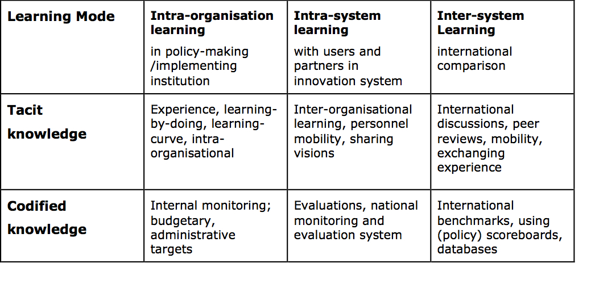

Policy learning
What is policy learning?
Policy learning refers to the ways in which policy systems generate and use knowledge about the rationales, design, operation and impacts of policies and policy mixes. It takes place at all points in the policy cycle: direction-setting and orientation, policy mix definition, policy mix delivery, and monitoring and evaluation. As such, policy learning demands the organisational capabilities to frame issues in terms of problems and solutions, to take an holistic view and to anticipate future needs.
The knowledge mobilised for learning processes can be grouped into the following types (Johnson and Lundvall 2001):
- Know how: the ability to do something;
- Know what: knowledge about facts;
- Know why: knowledge about principles and laws; and
- Know who: knowledge about who knows what.
Furthermore, learning can be considered to occur through the following modes (Kemp and Weehuizen 2005):
- Experience (learning by doing and learning by using);
- Observation of others (learning by observing);
- Systematic study (learning by studying or learning by learning); and
- Interaction (learning by interacting).
Learning processes also vary in depth of learning, which can be distinguished as “first-order” and “second-order” learning (Kemp and Weehuizen, 2005; van der Steen and Groenewegen, 2008) and described as follows:
- First-order learning does not question the core beliefs, fundamental design, goals and activities of an organization or system. This type of learning, also referred to as “lesson drawing”, is usually more technical and typically targets policy instruments and leads to incremental changes. It also encompasses internal learning, addressing processes within governmental organizations and leading to organizational changes. It takes place more frequently in well-defined institutional frameworks and stable environments with clear and stable rules of the game and shared mental maps of the actors involved and where no disagreement about important policy issues and effective instruments holds.
- Second-order learning involves a change in (or at least addresses the relevance of) “theories-in-use” or “paradigms” for an organization or system. This type of learning addresses goals and strategies as well as policy approaches and can lead to changes in policy paradigms. It involves a wider set of actors. It can lead to radical changes in policy frameworks and policies. This type of learning is more likely to occur when there is a degree of instability in structures and where tensions exist between competing objectives or rules of the game. Critical external events, scarcity of resources and emerging new fields or demands can provide the conditions that facilitate second-order policy learning.
Why is policy learning relevant for innovation policy?
The following three characteristics of innovation generate the need for policy learning:
- Systemic and interactive. Innovation is a systemic process and innovation policies integrate combinations of multiple instruments. Governments need to learn about the intended and unintended effects of interacting policies.
- Uncertain. Innovation is an uncertain process and policies need to leave room for experimentation. Policy learning is needed to ensure the adaptability of innovation policy systems to unforeseen evolutions (OECD 2010).
- Diverse. Innovation takes place differently according to the characteristics of the environment and strategies of actors, and trajectories to success are diverse; hence there is no standard model for effective innovation policies. Policies need to be fine-tuned to the system they address, which requires reflexivity and intelligence throughout all cycles of policy-making.
The demand for a more performance-oriented innovation policy coming from both the policy world and society requires a shift of focus from financial inputs and outputs towards progress in terms of how outcomes reflect the objectives of the policy. The capacity to assess the contribution of policies to desired outcomes and to organise feedback from these achievements into the policy system is at the core of the policy learning processes.
Modes of policy learning in innovation
Policy learning can take place inside organisations, between organisations in the same system, or with organisations in other systems. The relevant knowledge can be tacit or codified. This gives rise to the following modes of policy learning in innovation (Nauwelaers and Wintjes 2008):
- Intra-organisational learning refers mainly to learning-by-doing, based on own practices, and occurs when a policy-making unit or an implementing organisation learns from past mistakes and successes. The relevant knowledge is mostly tacit, embedded in individuals or teams. However, part of it can be codified in the form of internal monitoring or evaluation reports. This mode of learning touches upon only one element of the system but does not address the system as a whole.
- Intra-system learning refers to learning processes involving exchanges between several organizations that are part of a system. This includes exchange of tacit knowledge, which can be fostered by meetings between people from the various organizations, but also through employee mobility (temporary or permanent) between the organisations. Formal knowledge takes the form of evaluations, either of specific policies or a larger scope, in the form of systemic evaluations taking into account the interactions between various policies. Scoreboards and studies of innovation systems are also used for this type of learning.
- Inter-system learning involves comparisons and benchmarking between own system and other systems. This type of learning has gained in popularity and lies at the heart of the work of the OECD and the World Bank. Using mainly tacit knowledge from other policy makers, peer reviews from other countries is a relevant method to feed policy learning at all stages of the policy cycle (but mostly at the design stage) in one’s country, provided that context-specific elements are well understood. Personnel mobility and learning-by-visiting methods also support this type of learning. Ex-post transnational policy learning involves comparing evaluations of policies. Codified knowledge takes the form of comparative scoreboards and international benchmarks.
These various modes of learning are complementary (Table 1) and their combination should increase the effectiveness of policy learning.
Table 1: Modes of policy learning in innovation

Source: Nauwelaers and Wintjes (2008)
Challenges for policy learning in innovation
Policy learning in innovation faces the following challenges (Koch, Hauknes and Røste, 2003; Lundvall and Borras, 1997; Nauwelaers and Wintjes, 2008):
- Causality. Innovation is a multi-factor phenomenon, in which international competition plays an increasingly important role. Hence it is difficult to attribute achievements in innovation performance to specific features or instruments of a policy system.
- Interdependency of policy instruments. Policies having intended and unintended effects that are not always recorded nor understood properly, it is the interaction between instruments, as well as between them and their surrounding environment, that will influence the innovation outcomes.
- Barriers to transferability. Context-specificity and country biases make direct transfer of policies from one context to another impossible (OECD 2010). Imperfect policy learning practices overlooking this lead to flaws in policy design and implementation, due to naive benchmarking practices and inadequate imitation strategies.
- Limits in codified measurement tools. It is difficult to codify all critical elements for success in policy making since some of those elements are part of the tacit knowledge among policy makers and stakeholders and are not well suited to be measured by quantitative and robust indicators.
- Suboptimal quality of evaluations. These qualities include limitations in their coverage (range of policies and policy instruments) and scope (evaluation questions), piecemeal character overlooking interactions between policies and lack of linkages with the policy-making process (OECD 2005).
- Policy persistence and lock-ins. Politico-administrative traditions tend to generate policies reinforcing existing structures and goals configurations. This lock-in situation is reinforced if there is no constituency supporting new policy directions and weak strategic capacity to implement new policies.
- Policy fragmentation. Fragmented governance structures generate a difficulty for producing coherent policy-relevant knowledge, as well as a loss of strategic capacity spanning over the boundaries of ministries and agencies (OECD 2005).
- Cultural differences. Differences in culture and language impede interaction between researchers involved in policy-relevant research and government officials.
- A risk-averse culture in policy-making circles. Policy mistakes are more probable and more visible for new policies, making policy makers hesitant to innovate.
Addressing policy lock-in
Because policy persistence and lock-in can be a major stumbling block for effective policy learning practices, the following balances need to be achieved (Kemp and Weehuizen 2005):
- a balance between policy exploitation (making more efficient use of existing policies) and policy exploration (initiating and implementing new policies); and
- a balance between a focus on new, long-term goals and policies, and the setting-up of shorter-term projects with a clear demonstration effect.
The level of political legitimacy of actors involved in policy learning and subsequent policy changes is of direct relevance to the possibility to alleviate lock-in problems.
What other topics relate to policy learning?
The following topics are closely related to policy learning:
- Strategy and policy coherence. The availability of policy-relevant knowledge bases along with the capacity to exploit them lie at the core of strategy making in innovation.
- Measurement and evaluation. Measurement and evaluation of innovation policies is a necessary component of the knowledge base to be used for policy learning. Modern public management has emphasized the need for evaluation, although more from a perspective of accountability than learning. Evaluation practices can play a key role in enhancing policy learning when they are designed with this purpose in mind and when their results are communicated to policy makers at the strategic decision level.
- Horizontal governance. Fragmentation between policy domains impedes both inter-organisational learning and the development of a suitable and accessible knowledge base covering the various aspects of the innovation system.
- Openness in policy and governance. Stakeholder participation at various stages of the policy cycle is a necessary condition for accessing distributed knowledge useful for policy learning, of both a tacit and codified nature. Involvement of stakeholders in the learning process is also useful to secure the necessary endorsement of any new directions elaborated for innovation policy.
What policies relate to policy learning?
Three main types of policies can support better policy learning:
- The establishment of a strategic intelligence infrastructure;
- Efforts to develop organizational learning capabilities, for example, by upgrading skills and practices in policy circles; and
- Setting-up mechanisms and structures for wide stakeholder participation in policy-making.
Strategic intelligence infrastructure
A strategic intelligence infrastructure is a system of information sources, coupled with methods to exploit this information, organised in a policy-oriented mode. These sources and methods should be retrieved, stored, updated, interlinked and made easily accessible for the purpose of policy learning. The main value of such an organised infrastructure is to provide easy access to information and methods that are normally distributed across many different agencies or organisations. Typical content of such an infrastructure scoreboards, indexes and data for measuring innovation; technology assessment; technology foresight; evaluation (ex ante, ongoing, ex post; individual and systemic); policy monitoring; and benchmarking and peer review exercises.
Developing organisational learning capabilities
Efficient policy learning requires an upgrade of capacities for those involved in policy design and implementation, which might involve the following innovations (Koch, Hauknes and Røste, 2003; OECD, 2005):
- Adapted programmes in higher education, combining administrative and legal aspects with economic, technological and social perspectives;
- Use of lifelong learning opportunities in the form of workshops, sabbaticals, courses and other forms of training;
- Mobility of civil servants and agency employees within and outside the public sector;
- Changes in recruitment policies, in order to achieve better balanced distribution as regards age, gender, origin, and educational background;
- Introduction of policy learning in descriptions of functions and employment contracts;
- Evolution towards a culture in which openness is encouraged and risk-taking is acceptable;
- Strategic and distributed (i.e. involving many policy-makers) use of international organisations offering policy learning platforms like the OECD, the World Bank, the EU, and in international conferences;
- The establishment of new forms of cross-organisational working groups, task forces or learning-oriented seminars;
- The design of coherent plans for the commissioning of evaluations and their active diffusion within policy circles; and
- Closer interaction with relevant research organisations producing policy-relevant research.
Stakeholder involvement and consultation
The innovation policy paradigm shift towards an interactive model, and the adoption of a broader perspective on innovation, require the mobilization and the availability of reflexive skills in a widely dispersed set of actors, and their ability to communicate and develop joint contributions to the policy-making process.
Stakeholders involvement and mobilisation can be formal, through e.g. the institutionalization of strategic advisory units or consultative boards close to decision-makers, or more informal and ad hoc such as a (series of) wide consultative exercises. Evaluations and peer reviews are also an indirect way to mobilise the knowledge held by stakeholders and engage them in policy learning for innovation.
References
- Johnson, B. and B.-A. Lundvall (2001), “Why all this fuss about codified and tacit knowledge?” Paper for DRUID Winter Conference, Korsør, Denmark, Jan. 18–20, 2001.
- Kemp, R. and R. Weehuizen, S. (2005), Policy Learning, What Does It Mean and How Can We Study It?, Publin Report No. D15, NIFU-STEP, Oslo.
- Koch, P., J. Hauknes and R. Røste (2003), “Rationalities and innovation policy learning”, in STEP (2002) Good Practices in Nordic Innovation Policies, STEP, Centre for Innovation Research, a part of SINTEF Industrial Management, Oslo, June 2003.
- Lundvall, B.-A. and S. Borrás (1997), The Globalising Learning Economy: Implications for Innovation Policy, Report based on contributions from seven projects under the TSER (Targeted Socio-economic Research) programme, DG XII, Commission of the European Union.
- Nauwelaers, C. and R. Wintjes (2008), “Innovation policy, innovation in policy: Policy learning within and across systems and clusters”, in C. Nauwelaers and R. Wintjes (eds.), Innovation Policy in Europe, Edward Elgar, Cheltenham.
- OECD (2010), OECD Science, Technology and Industry Outlook 2010, OECD Publishing, Paris.
- OECD (2005), Governance of Innovation: Synthesis Report, OECD Publishing, Paris.
- Van der Steen, M. and J. Groenewegen (2008), “Exploring policy entrepreneurship”, Working Paper 2008-01, Discussion paper series on the Coherence Between Institutions and Technologies in Infrastructures, Ecole Polytechnique Fédérale de Lausanne, Delft Institute of Technology.